STAM 102 :: Lecture 06 :: WINDOWS: GUI, Desktop and its elements, Windows Explorer, Working with files and folders, Setting time and date, Starting and Shutting down Windows

WINDOWS
- An operating system with a graphical user interface (GUI).
- Graphical User Interface (GUI) is a user interface based on graphics (icons and pictures and menus) instead of text; uses a mouse as well as a keyboard as an input device)
Versions
- Windows 98
- Windows Me
- Windows NT
- Windows 2000
- Windows XP
- Windows Server 2003
- Windows Vista
- Windows 7
Desktop and its elements
- In Windows operating system the basic working platform is the desktop.
- It is also the opening screen of the Windows operating system.
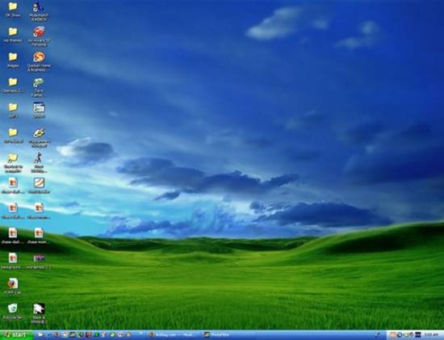
- The desktop contains:
- Taskbar
- Icons
Taskbar
- Taskbar is usually a narrow strip present at the bottom of the screen.
WINDOWS Xp Taskbar
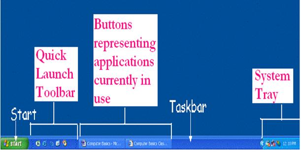
Windows Vista Taskbar
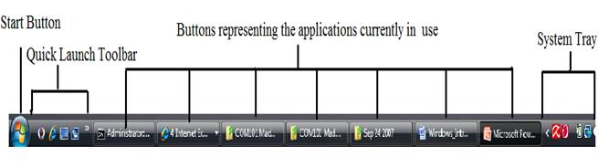
Icons
- Icons are small pictures/images representing applications.
- Each icon has a label telling the name of the application it represents.
Example:
Computer
|
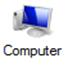 |
Network
|
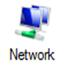 |
Recycle Bin
|
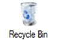 |
Internet Explorer
|
Windows Explorer
Windows Explorer is a file manager application used to view and manage drives, folders, and files. Windows Explorer can be opened by clicking on
Start > My Computer or using the short cut key Windows + E while in Windows Xp
Start > Computer or using the short cut key Windows + E while in Windows Vista.
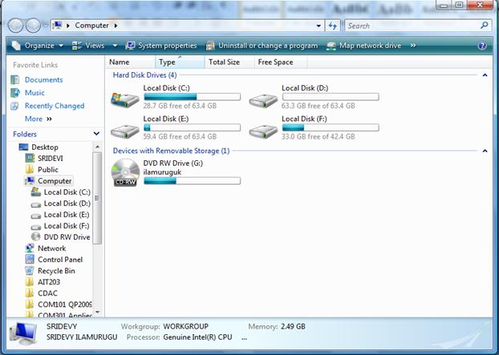
Working with files and folders
Folders are the basic organizational building blocks of any computer system. Without folders it would be virtually impossible to keep track of all the files that are found on even the smallest system. New folders can be created just about anywhere, but three methods are shown below.
To create a folder
New Folder On Desktop - Right click anywhere on an open area of the desktop. Select New and then click Folder. A new folder with the default name New Folder will be created on the desktop. Either accept the default name New Folder (bad idea) by hitting the enter key or type a new name for the folder (good idea) and then hit enter on the keyboard.
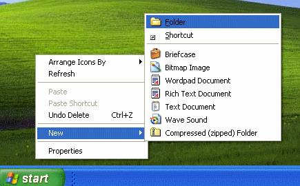
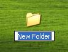
To open a folder
|
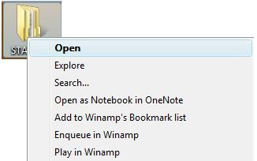 |
To Rename a folder
|
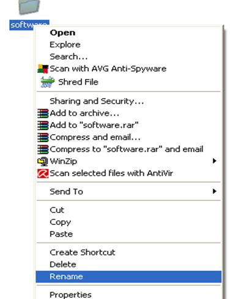 |
To Copy and Paste a folder
|
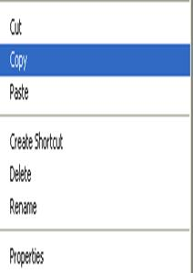 |
To delete a folder
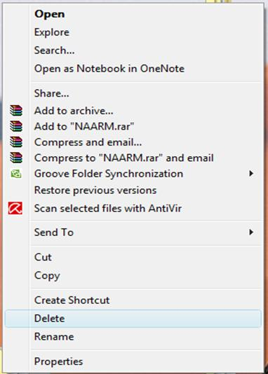 |
- The deleted file is moved to the Recycle bin.
- If you want the deleted file back you can open the recycle bin folder and restore the deleted file.
- If you want file to be completely deleted without getting stored in the Recycle Bin then choose the file and Press Shift + Del keys in the keyboard. This will erase the file even without storing the file in the Recycle Bin.
- Once you delete the file with Shift + Del combination keys it is not possible for us to restore the file again.
Opening a program file
Click StartàProgramsàSelect the program and double click
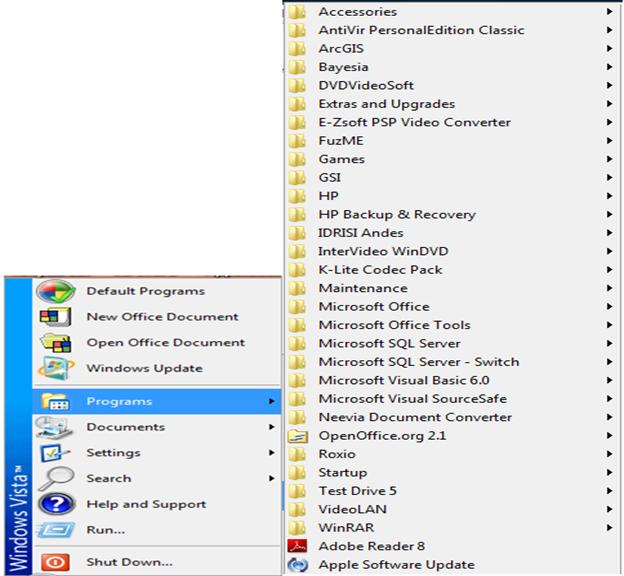
Locating Most Recent Files
Click StartàDocuments
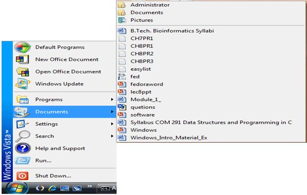
Finding Files
Click Startà Search
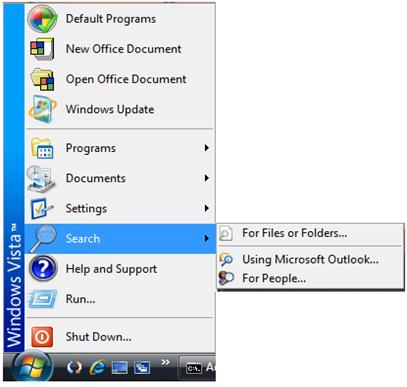
Anatomy of a Window
- A rectangular area on the desktop that is used by an application is called a Window.
Although the contents of every window are different, all windows share some things in common. For one thing, windows always appear on the desktop—the main work area of your screen. In addition, most windows have the same basic parts:
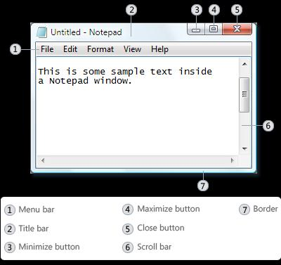
- Title bar. Displays the name of the document and program (or the folder name if you're working in a folder).
- Minimize, Maximize, and Close buttons. These buttons hide the window, enlarge it to fill the whole screen, and close it, respectively (more details on these shortly).
- Menu bar. Contains items that you can click to make choices in a program.
- Scroll bar. Lets you scroll the contents of the window to see information that is currently out of view.
- Borders and corners. You can drag these with your mouse pointer to change the size of the window.
Setting Time and Date
- Click Start, and then click Control Panel.
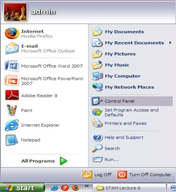
- Click Date and Time icon in the Control Panel Window.
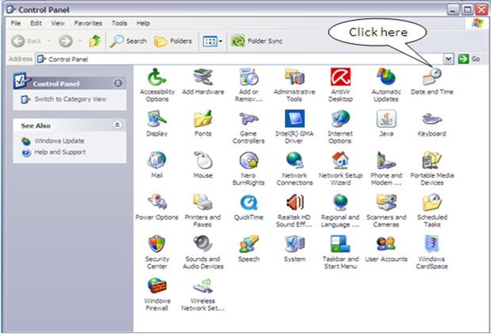
|
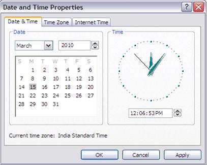 |
|
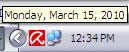 |
Starting Windows
- Switch on the power supply.
- Switch on the CPU and Monitor.
- Windows XP splash screen will be displayed as shown below:
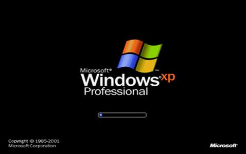
- Enter the password to load your personal setting in the tab shown below:
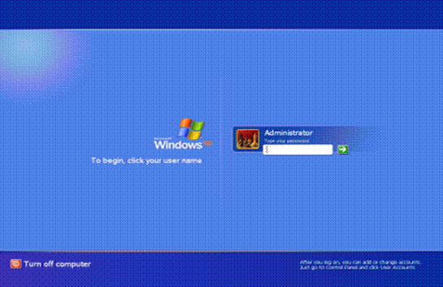
Shutting Down
- Click Start Button à Choose Turn Off Computer option
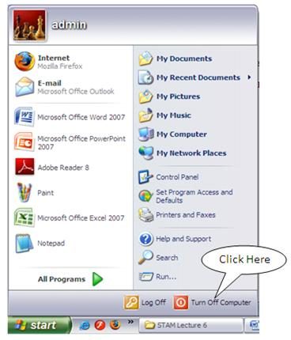
- Click the Turn Off option in the Shut Down Dialog Box.
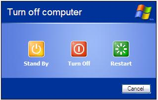
| Download this lecture as PDF here |